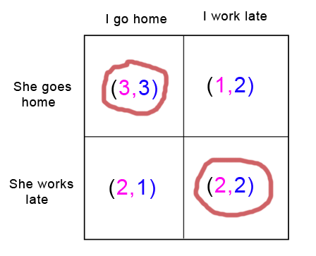
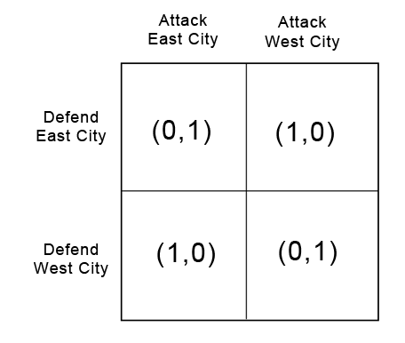
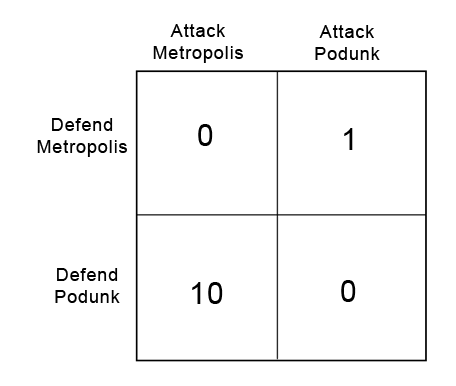

Nash Equilibria and Schelling Points
A Nash equilibrium is an outcome in which neither player is willing to unilaterally change her strategy, and they are often applied to games in which both players move simultaneously and where decision trees are less useful.
Suppose my girlfriend and I have both lost our cell phones and cannot contact each other. Both of us would really like to spend more time at home with each other (utility 3). But both of us also have a slight preference in favor of working late and earning some overtime (utility 2). If I go home and my girlfriend's there and I can spend time with her, great. If I stay at work and make some money, that would be pretty okay too. But if I go home and my girlfriend's not there and I have to sit around alone all night, that would be the worst possible outcome (utility 1). Meanwhile, my girlfriend has the same set of preferences: she wants to spend time with me, she'd be okay with working late, but she doesn't want to sit at home alone.

This “game” has two Nash equilibria. If we both go home, neither of us regrets it: we can spend time with each other and we've both got our highest utility. If we both stay at work, again, neither of us regrets it: since my girlfriend is at work, I am glad I stayed at work instead of going home, and since I am at work, my girlfriend is glad she stayed at work instead of going home. Although we both may wish that we had both gone home, neither of us specifically regrets our own choice, given our knowledge of how the other acted.
When all players in a game are reasonable, the (apparently) rational choice will be to go for a Nash equilibrium (why would you want to make a choice you'll regret when you know what the other player chose?) And since John Nash (remember that movie A Beautiful Mind?) proved that every game has at least one, all games between well-informed rationalists (who are not also being superrational in a sense to be discussed later) should end in one of these.
What if the game seems specifically designed to thwart Nash equilibria? Suppose you are a general invading an enemy country's heartland. You can attack one of two targets, East City or West City (you declared war on them because you were offended by their uncreative toponyms). The enemy general only has enough troops to defend one of the two cities. If you attack an undefended city, you can capture it easily, but if you attack the city with the enemy army, they will successfully fight you off.

Here there is no Nash equilibrium without introducing randomness. If both you and your enemy choose to go to East City, you will regret your choice - you should have gone to West and taken it undefended. If you go to East and he goes to West, he will regret his choice - he should have gone East and stopped you in your tracks. Reverse the names, and the same is true of the branches where you go to West City. So every option has someone regretting their choice, and there is no simple Nash equilibrium. What do you do?
Here the answer should be obvious: it doesn't matter. Flip a coin. If you flip a coin, and your opponent flips a coin, neither of you will regret your choice. Here we see a "mixed Nash equilibrium", an equilibrium reached with the help of randomness.
We can formalize this further. Suppose you are attacking a different country with two new potential targets: Metropolis and Podunk. Metropolis is a rich and strategically important city (utility: 10); Podunk is an out of the way hamlet barely worth the trouble of capturing it (utility: 1).

A so-called first-level player thinks: “Well, Metropolis is a better prize, so I might as well attack that one. That way, if I win I get 10 utility instead of 1”
A second-level player thinks: “Obviously Metropolis is a better prize, so my enemy expects me to attack that one. So if I attack Podunk, he'll never see it coming and I can take the city undefended.”
A third-level player thinks: “Obviously Metropolis is a better prize, so anyone clever would never do something as obvious as attack there. They'd attack Podunk instead. But my opponent knows that, so, seeking to stay one step ahead of me, he has defended Podunk. He will never expect me to attack Metropolis, because that would be too obvious. Therefore, the city will actually be undefended, so I should take Metropolis.”
And so on ad infinitum, until you become hopelessly confused and have no choice but to spend years developing a resistance to iocane powder.
But surprisingly, there is a single best solution to this problem, even if you are playing against an opponent who, like Professor Quirrell, plays “one level higher than you.”
When the two cities were equally valuable, we solved our problem by flipping a coin. That won't be the best choice this time. Suppose we flipped a coin and attacked Metropolis when we got heads, and Podunk when we got tails. Since my opponent can predict my strategy, he would defend Metropolis every time; I am equally likely to attack Podunk and Metropolis, but taking Metropolis would cost them much more utility. My total expected utility from flipping the coin is 0.5: half the time I successfully take Podunk and gain 1 utility, and half the time I am defeated at Metropolis and gain 0.And this is not a Nash equilibrium: if I had known my opponent's strategy was to defend Metropolis every time, I would have skipped the coin flip and gone straight for Podunk.
So how can I find a Nash equilibrium? In a Nash equilibrium, I don't regret my strategy when I learn my opponent's action. If I can come up with a strategy that pays exactly the same utility whether my opponent defends Podunk or Metropolis, it will have this useful property. We'll start by supposing I am flipping a biased coin that lands on Metropolis x percent of the time, and therefore on Podunk (1-x) percent of the time. To be truly indifferent which city my opponent defends, 10x (the utility my strategy earns when my opponent leaves Metropolis undefended) should equal 1(1-x) (the utility my strategy earns when my opponent leaves Podunk undefended). Some quick algebra finds that 10x = 1(1-x) is satisfied by x = 1/11. So I should attack Metropolis 1/11 of the time and Podunk 10/11 of the time.
My opponent, going through a similar process, comes up with the suspiciously similar result that he should defend Metropolis 10/11 of the time, and Podunk 1/11 of the time.
If we both pursue our chosen strategies, I gain an average 0.9090... utility each round, soundly beating my previous record of 0.5, and my opponent suspiciously loses an average -.9090 utility. It turns out there is no other strategy I can use to consistently do better than this when my opponent is playing optimally, and that even if I knew my opponent's strategy I would not be able to come up with a better strategy to beat it. It also turns out that there is no other strategy my opponent can use to consistently do better than this if I am playing optimally, and that my opponent, upon learning my strategy, doesn't regret his strategy either.
In The Art of Strategy, Dixit and Nalebuff cite a real-life application of the same principle in, of all things, penalty kicks in soccer. A right-footed kicker has a better chance of success if he kicks to the right, but a smart goalie can predict that and will defend to the right; a player expecting this can accept a less spectacular kick to the left if he thinks the left will be undefended, but a very smart goalie can predict this too, and so on. Economist Ignacio Palacios-Huerta laboriously analyzed the success rates of various kickers and goalies on the field, and found that they actually pursued a mixed strategy generally within 2% of the game theoretic ideal, proving that people are pretty good at doing these kinds of calculations unconsciously.
So every game really does have at least one Nash equilibrium, even if it's only a mixed strategy. But some games can have many, many more. Recall the situation between me and my girlfriend:
There are two Nash equilibria: both of us working late, and both of us going home. If there were only one equilibrium, and we were both confident in each other's rationality, we could choose that one and there would be no further problem. But in fact this game does present a problem: intuitively it seems like we might still make a mistake and end up in different places.
Here we might be tempted to just leave it to chance; after all, there's a 50% probability we'll both end up choosing the same activity. But other games might have thousands or millions of possible equilibria and so will require a more refined approach.
Art of Strategy describes a game show in which two strangers were separately taken to random places in New York and promised a prize if they could successfully meet up; they had no communication with one another and no clues about how such a meeting was to take place. Here there are a nearly infinite number of possible choices: they could both meet at the corner of First Street and First Avenue at 1 PM, they could both meet at First Street and Second Avenue at 1:05 PM, etc. Since neither party would regret their actions (if I went to First and First at 1 and found you there, I would be thrilled) these are all Nash equilibria.
Despite this mind-boggling array of possibilities, in fact all six episodes of this particular game ended with the two contestants meeting successfully after only a few days. The most popular meeting site was the Empire State Building at noon.
How did they do it? The world-famous Empire State Building is what game theorists call focal: it stands out as a natural and obvious target for coordination. Likewise noon, classically considered the very middle of the day, is a focal point in time. These focal points, also called Schelling points after theorist Thomas Schelling who discovered them, provide an obvious target for coordination attempts.
What makes a Schelling point? The most important factor is that it be special. The Empire State Building, depending on when the show took place, may have been the tallest building in New York; noon is the only time that fits the criteria of “exactly in the middle of the day”, except maybe midnight when people would be expected to be too sleepy to meet up properly.
Of course, specialness, like beauty, is in the eye of the beholder. David Friedman writes:
Two people are separately confronted with the list of numbers [2, 5, 9, 25, 69, 73, 82, 96, 100, 126, 150 ] and offered a reward if they independently choose the same number. If the two are mathematicians, it is likely that they will both choose 2—the only even prime. Non-mathematicians are likely to choose 100—a number which seems, to the mathematicians, no more unique than the other two exact squares. Illiterates might agree on 69, because of its peculiar symmetry—as would, for a different reason, those whose interest in numbers is more prurient than mathematical.
A recent open thread comment pointed out that you can justify anything with “for decision-theoretic reasons” or “due to meta-level concerns”. I humbly propose adding “as a Schelling point” to this list, except that the list is tongue-in-cheek and Schelling points really do explain almost everything - stock markets, national borders, marriages, private property, religions, fashion, political parties, peace treaties, social networks, software platforms and languages all involve or are based upon Schelling points. In fact, whenever something has “symbolic value” a Schelling point is likely to be involved in some way. I hope to expand on this point a bit more later.
Sequential games can include one more method of choosing between Nash equilibria: the idea of a subgame-perfect equilibrium, a special kind of Nash equlibrium that remains a Nash equilibrium for every subgame of the original game. In more intuitive terms, this equilibrium means that even in a long multiple-move game no one at any point makes a decision that goes against their best interests (remember the example from the last post, where we crossed out the branches in which Clinton made implausible choices that failed to maximize his utility?) Some games have multiple Nash equilibria but only one subgame-perfect one; we'll examine this idea further when we get to the iterated prisoners' dilemma and ultimatum game.
In conclusion, every game has at least one Nash equilibrium, a point at which neither player regrets her strategy even when she knows the other player's strategy. Some equilibria are simple choices, others involve plans to make choices randomly according to certain criteria. Purely rational players will always end up at a Nash equilibrium, but many games will have multiple possible equilibria. If players are trying to coordinate, they may land at a Schelling point, an equilibria which stands out as special in some way.
 Loading…
Loading… Subscribe to RSS Feed
Subscribe to RSS Feed
>We observe that politicians are happy to cut taxes (for people who can benefit them) if they personally get paid as much or more than before. Why would it be otherwise? Having the ability to take and redistribute someone else's money provides a concentrated benefit to the one doing the taking and redistributing. Cutting taxes produces a much more diffuse benefit. Concentrated benefits lead to Machiavellian behavior much more than diffuse benefits. It is possible, of course, to have an anti-taxes lobbying group which provides a concentrated benefit, but the overall balance between concentrated and diffuse benefits is on the side of the higher taxes. >(And any long-term interest, eg power for their family, should take the state of their civilization into account.) That would be a diffuse cost. The politician may care about the portion of the diffuse effectthat affects his family, but that's only a small portion of the total. If the politician makes policy based on which costs help him and his family and which ones hurt him and his family, the concentrated ones will win. The ones that affect all civilization, a small portion of which he actually cares about because it goes to his family, will lose.
by Jiro on Argument Screens Off Authority | 0 points